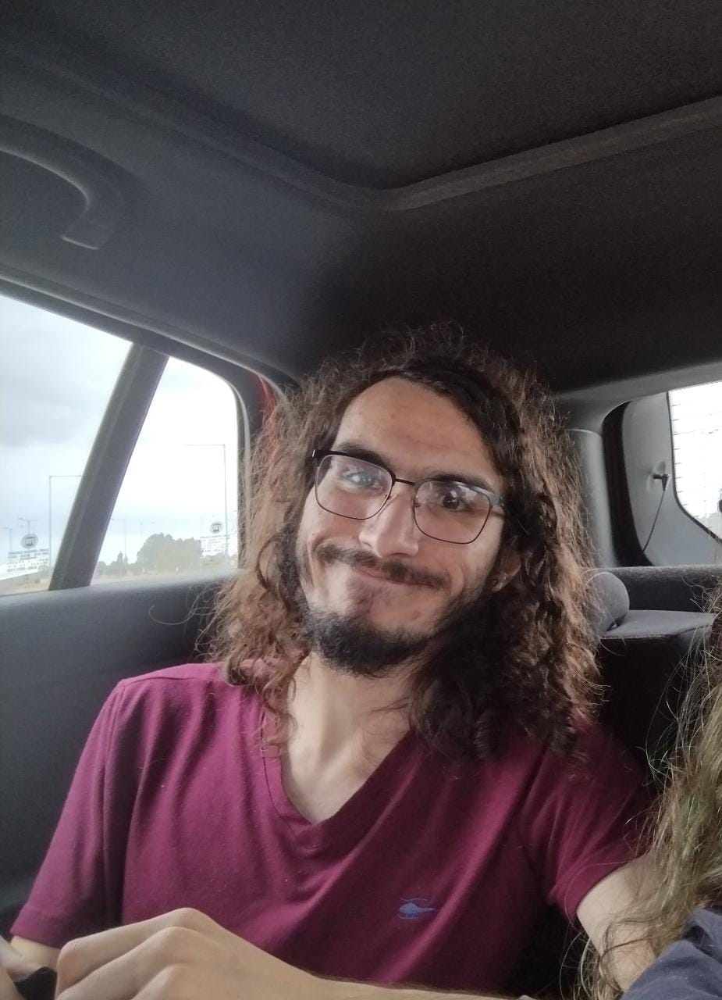
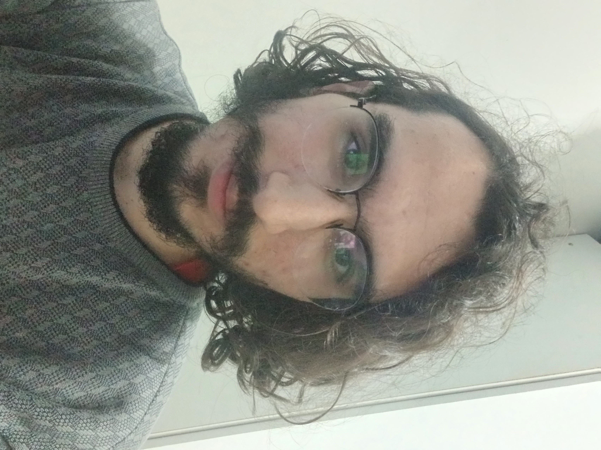
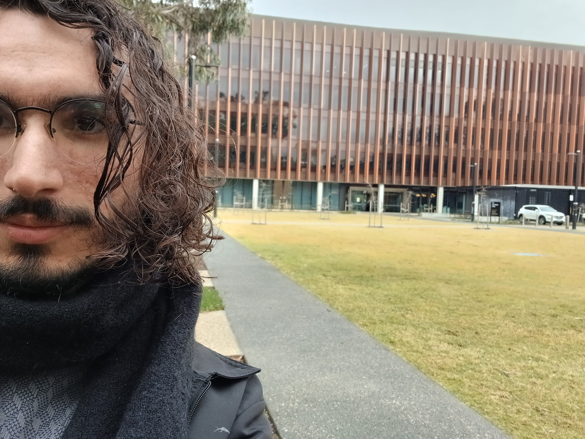
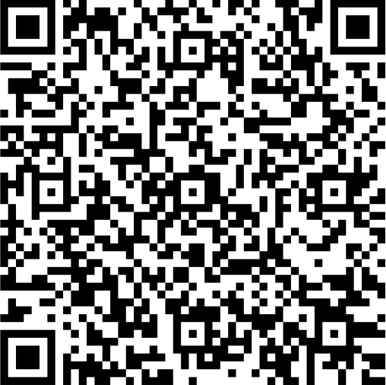

Eu gostaria de agradecer cada uma das pessoas incríveis que ajudaram com a vaquinha. É graças a vocês que eu estou podendo aproveitar essa oportunidade maravilhosa que surgiu. Cada um de vocês, independente do tamanho da ajuda, teve um papel importantíssimo ao realizar esse sonho. Eu sou imensamente grato a cada pessoínha que contribuiu com essa campanha. Essa experiência essa sendo incrível e de grande aprendizado para mim. Aqui vai uma foto minha em frente ao instituto de matemática.

Se você ainda quiser contribuir com alguma coisa para ajudar com custos de vida, fique a vontade.
Me chamo Sérgio Maciel e atualmente estou cursando Bacharelado em Matemática na Universidade de São Paulo (USP). Devido ao meu desempenho em atividades acadêmicas, eu fui aprovado em um programa de intercâmbio para a Australian National University (ANU), a maior universidade da Austrália. Nesse programa, eu tenho a oportunidade de passar um semestre estudando na ANU. É uma chance única que vai me proporcionar um crescimento enorme na carreira e melhores oportunidades.
Porém, ao contrário de como é no Brasil, universidades públicas no exterior não costumam ser gratuitas. E não é diferente na Austrália. Assim, eu precisaria pagar a "mensalidade" da universidade, chamada de tuition fee, que tem um valor de A$13.214 dólares australianos. Isso corresponde a cerca de R$45.000. Porém, diferente das mensalidades das universidades privadas brasileiras, esse valor cobre o semestre inteiro.
Eu não tinha condições de arcar com esse custo sozinho e por isso pedi ajuda para poder aproveitar essa chance única de fazer meu intercâmbio.
Tuition Fee
A Tuition foi paga e a contagem terminou
Como ajudar?
Você pode contribuir por pix (chave e QR code a seguir) ou transferência com os dados ao lado.
Chave pix celular: 48984804704
Nome: Sergio Henrique Maciel
Banco: 001 - Banco do Brasil
Agência: 540-1
CC: 42341-6

Por que Austrália?
De todos os lugares no mundo, por que eu escolhi a Austrália? O motivo é o seguinte: a principal área da matemática que eu trabalho é chamada de topologia algébrica, você pode saber mais no final da página, onde eu falo exclusivamente do que eu faço.
Muito relacionada com topologia algébrica, está a teoria de categorias. Teoria de categorias é uma linguagem muito versátil da matemática que traz diversas ferramentas, das quais topologia algébrica faz uso extensivo. Topologia algébrica e categorias são tão próximas que algumas vezes são indistinguíveis.
A Austrália tem um dos maiores centros em teoria de categorias no mundo, com pesquisadores líderes no assunto. A razão de ter escolhido aplicar para a Austrália é justamente por conta dessa atmosfera na qual teoria de categorias floresce. É a chance de estar aprendendo e desenvolvendo atividades com as maiores autoridades na área, o que certamente vai me tornar um pesquisador muito melhor.
Qual o destino do dinheiro juntado com a vaquinha?
O dinheiro foi usado para ajudar a pagar a tuition fee (tipo a mensalidade da universidade). Graças a todo mundo que ajudou, os custos aliviados tornaram possível essa experiência. A vaquinha para a tuition em si já terminou e qualquer contribuição que vier agora vai ser destinada a sobreviver na Austrália.
Um pouco de quem sou eu e o que faço
Eu estudo bacharelado em matemática na Universidade de São Paulo (USP), estou no terceiro ano da graduação e dentro da matemática, eu trabalho em uma área chamada topologia algébrica.
Topologia é o estudo de diferentes tipos de espaços, que são conjuntos em que você sabe quais elementos estão "próximos" uns dos outros. Existem diversos tipos de espaço, alguns mais intuitivos e outros nem tanto.
Por exemplo, o plano cartesiano é um espaço bem conhecido. O círculo é outro. Uma esfera também, um toro (formato de rosquinha) é mais um espaço familiar. Mas existem outros, tão estranhos quanto você queira.
Topologia algébrica é uma forma de estudar topologia usando ferramentas da álgebra. Por exemplo, podemos associar números a diferentes formas de jogar um espaço dentro do outro. Ou podemos etiquetar os espaços com conjuntos especiais, conjuntos em que dê pra fazer álgebra neles. Com essas ferramentas, podemos descobrir muitas coisas sobre os espaços que estamos interessados. Por exemplo, você sabia que em todo instante existem dois pontos em lados perfeitamente opostos da Terra que têm a mesma temperatura e mesma pressão atmosférica? Essa é uma das coisas que podemos provar usando topologia algébrica.
Meu sonho é tornar-se um grande pesquisador e contribuir para o conhecimento matemático global de forma significativa. Para ser um dos melhores, eu preciso estar em contato com os melhores. Por isso esse intercâmbio é tão importante: não só vai me permitir entrar nessa rede, mas também vai ser um peso enorme para ser aprovado em um mestrado e doutorado nos melhores lugares do mundo. Você pode ler um pouco mais sobre meu trajeto e conquistas aqui e navegar pelo site para explorar um pouco do que eu faço (site está em inglês, pois é meu site acadêmico, às vezes o navegador traduz).